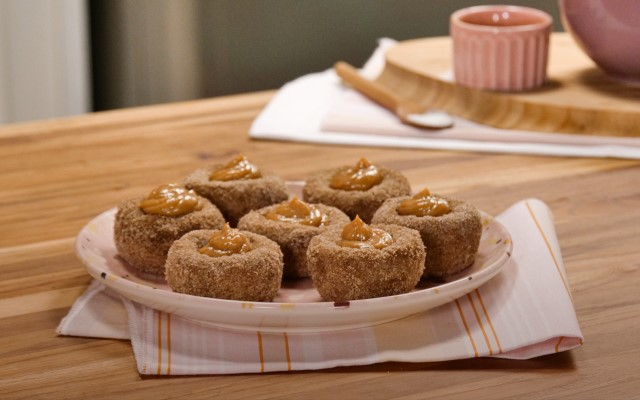

TUDO GOSTOSO
Membro desde 2005
- 200ml de água
- 1 colher (sopa) de manteiga
- 4 colheres (sopa) de açucar
- 1 colher (chá) de canela em pó
- 1 xícara de farinha de trigo
- 1 colher (sopa) de canela
- 1/2 xícara de açucar
Comprar ingredientes
- Em uma panela, adicione a água, a manteiga, a canela e o açúcar.
-
Misture bem até o açúcar dissolver.
-
Em seguida, adicione a farinha de trigo aos poucos.
-
Misture tudo com uma colher de pau até desgrudar da panela, se necessário,
adicione água aos poucos para
chegar no ponto.
-
Retire da panela e sove até ficar uma massa homogênea.
-
Faça bolinhas e, com o dedo, pressione fazendo um furo no meio.
-
Frite submerso no óleo.
-
Passe na mistura de açúcar e canela e coloque o recheio com ajuda de um saco
de confeiteiro e um bico.